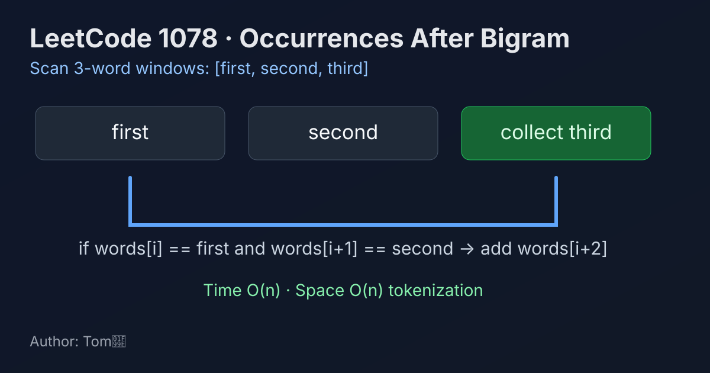

LeetCode 1078: Occurrences After Bigram (Token Window Matching)
LeetCode 1078StringSimulationToday we solve LeetCode 1078 - Occurrences After Bigram.
Source: https://leetcode.com/problems/occurrences-after-bigram/

English
Problem Summary
Given a sentence text and two words first and second, return all words that appear immediately after the pattern first second in the sentence.
Key Insight
After splitting by spaces, the question is exactly: for every index i, if words[i] == first and words[i+1] == second, then collect words[i+2]. This is a fixed-size 3-word window scan.
Algorithm
- Split text into words.
- Iterate i from 0 to len(words)-3.
- If words[i] and words[i+1] match first, second, append words[i+2].
- Return collected list.
Complexity Analysis
Let n be the number of words.
Time: O(n).
Space: O(n) for tokenization plus output.
Common Pitfalls
- Looping to len(words)-1 and causing i+2 out-of-range.
- Forgetting multiple matches can overlap.
- Using substring matching instead of exact token equality.
Reference Implementations (Java / Go / C++ / Python / JavaScript)
class Solution {
public String[] findOcurrences(String text, String first, String second) {
String[] words = text.split(" ");
List<String> ans = new ArrayList<>();
for (int i = 0; i + 2 < words.length; i++) {
if (words[i].equals(first) && words[i + 1].equals(second)) {
ans.add(words[i + 2]);
}
}
return ans.toArray(new String[0]);
}
}func findOcurrences(text string, first string, second string) []string {
words := strings.Split(text, " ")
ans := make([]string, 0)
for i := 0; i+2 < len(words); i++ {
if words[i] == first && words[i+1] == second {
ans = append(ans, words[i+2])
}
}
return ans
}class Solution {
public:
vector<string> findOcurrences(string text, string first, string second) {
vector<string> words;
string cur;
stringstream ss(text);
while (ss >> cur) words.push_back(cur);
vector<string> ans;
for (int i = 0; i + 2 < (int)words.size(); ++i) {
if (words[i] == first && words[i + 1] == second) {
ans.push_back(words[i + 2]);
}
}
return ans;
}
};class Solution:
def findOcurrences(self, text: str, first: str, second: str) -> List[str]:
words = text.split()
ans = []
for i in range(len(words) - 2):
if words[i] == first and words[i + 1] == second:
ans.append(words[i + 2])
return ansvar findOcurrences = function(text, first, second) {
const words = text.split(' ');
const ans = [];
for (let i = 0; i + 2 < words.length; i++) {
if (words[i] === first && words[i + 1] === second) {
ans.push(words[i + 2]);
}
}
return ans;
};中文
题目概述
给定一句话 text 以及两个单词 first、second，请返回所有紧跟在短语 first second 后面的单词。
核心思路
把句子按空格切分后，题目等价于扫描长度为 3 的窗口：若 words[i] == first 且 words[i+1] == second，就把 words[i+2] 加入答案。
算法步骤
- 将 text 按空格切分成数组 words。
- 遍历 i = 0..len(words)-3。
- 当 words[i]、words[i+1] 分别等于 first、second 时，收集 words[i+2]。
- 返回结果列表。
复杂度分析
设单词数为 n。
时间复杂度：O(n)。
空间复杂度：O(n)（切分后的数组与输出）。
常见陷阱
- 循环上界写错导致访问 i+2 越界。
- 忽略重叠匹配情况（例如 "a b a b c"）。
- 用子串包含判断替代单词精确匹配。
多语言参考实现（Java / Go / C++ / Python / JavaScript）
class Solution {
public String[] findOcurrences(String text, String first, String second) {
String[] words = text.split(" ");
List<String> ans = new ArrayList<>();
for (int i = 0; i + 2 < words.length; i++) {
if (words[i].equals(first) && words[i + 1].equals(second)) {
ans.add(words[i + 2]);
}
}
return ans.toArray(new String[0]);
}
}func findOcurrences(text string, first string, second string) []string {
words := strings.Split(text, " ")
ans := make([]string, 0)
for i := 0; i+2 < len(words); i++ {
if words[i] == first && words[i+1] == second {
ans = append(ans, words[i+2])
}
}
return ans
}class Solution {
public:
vector<string> findOcurrences(string text, string first, string second) {
vector<string> words;
string cur;
stringstream ss(text);
while (ss >> cur) words.push_back(cur);
vector<string> ans;
for (int i = 0; i + 2 < (int)words.size(); ++i) {
if (words[i] == first && words[i + 1] == second) {
ans.push_back(words[i + 2]);
}
}
return ans;
}
};class Solution:
def findOcurrences(self, text: str, first: str, second: str) -> List[str]:
words = text.split()
ans = []
for i in range(len(words) - 2):
if words[i] == first and words[i + 1] == second:
ans.append(words[i + 2])
return ansvar findOcurrences = function(text, first, second) {
const words = text.split(' ');
const ans = [];
for (let i = 0; i + 2 < words.length; i++) {
if (words[i] === first && words[i + 1] === second) {
ans.push(words[i + 2]);
}
}
return ans;
};
Comments